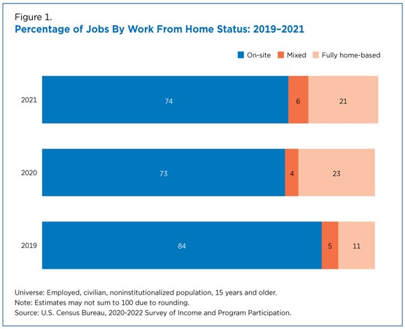

COVID-19: Work Productivity Impacts
The Shift to Remote Work
The COVID-19 Pandemic has caused a major & dramatic shift in
the workplace environment, granted that 6.5% of private business
workers were already working remotely in 2019, but then the
pandemic was the start of experimental full-time remote work for
many workers & firms. The impact on productivity was dependent
on many factors, such as the types of tasks that needed to be done,
the workers’ access to technology, their home environment,
motivation, or how they even manage their work. Individual firms
conducted their own experiments to track the productivity levels of
their workers, identifying the small positive effects of
hybrid/remote learning such as the number of emails written, the
number of phone calls & video calls made, as well as the novelty
of work products as reported in manager assigned performance
ratings. The results show that remote work has led to lower
chances of employees voluntarily leaving the company, due to the
increased job satisfaction which is substantially reducing hiring
costs.
Mental Affects
Having to balance increased work demands with personal
responsibilities during the pandemic led to burnout, and decreased
job satisfaction among government municipal employees, as the
boundary between professional and personal life became blurred
during the pandemic. Studies were conducted to explore the impact
on work life balance such as the challenges of setting boundaries,
managing caregiver responsibilities, and maintaining productivity
while working. For example, in China there was a notable increase
in 46.90% in mentally unhealthy days among the urban residents,
more particularly women, and those who have been employed
within a private sector. This increase had lasting negative effects
on income expectations, as well as confidence. Employees who
worked from home, and those who were dissatisfied with
managing it all experienced a more pronounced decline in work
productivity, job performance, and job satisfaction, and overall
well-being.
Demographics
According to the American Community Survey (ACS), remote
work has increased dramatically across all major industries from
2019 to 2021. Once the social distancing policies in 2022 were
removed the percentage of remote workers dropped slightly, but
the participation in remote work was still higher than it was back in
2019 in all industries, but agriculture, forestry, fishing, and hunting
eventually returned to its 2019 level.
